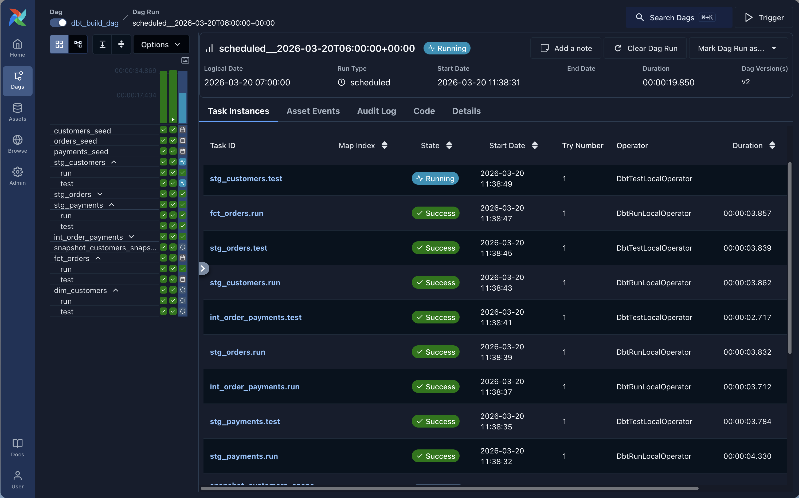

Part 2 of the “Orchestrating dbt without dbt Cloud” series.
Introduction
Apache Airflow is the most widely deployed workflow orchestrator in the data engineering world. If you work at a company that has been doing data engineering for more than a couple of years, there is a good chance Airflow is already running somewhere in your infrastructure (or at least that you’ve heard about it). That existing footprint is a real argument in its favor: integrating dbt into a stack that already uses Airflow often means less new tooling to learn and justify, and less infrastructure to maintain.
The question is how you do the integration. The naive approach is a BashOperator that shells out to dbt build. It works, but it treats your entire dbt project as a single black box. You get one task, one log, one pass or fail. That is not very useful when you have 80 models and one of them is silently producing wrong numbers.
The modern approach is astronomer-cosmos, an open-source library from Astronomer that solves this by turning each dbt node into its own Airflow task. You keep your existing Airflow setup, and you get model-level visibility, retries, and dependency tracking for free.
This article covers both approaches briefly, then focuses on cosmos as the recommended path. The companion repository is at: github.com/p-munhoz/dbt-orchestrator-comparison
All code lives in orchestrators/airflow/.
The Two Approaches
BashOperator: Simple but limited
The simplest possible Airflow integration looks like this:
from airflow import DAG
from airflow.operators.bash import BashOperator
from datetime import datetime
with DAG("dbt_build", schedule="0 6 * * *", start_date=datetime(2025, 1, 1)) as dag:
BashOperator(
task_id="dbt_build",
bash_command="dbt build --project-dir /path/to/dbt_project",
)One task, one command. It works and it is easy to reason about. The problems show up at scale: you cannot retry a single model, you cannot see which model failed in the Airflow UI without reading through logs, and you cannot express dependencies between dbt models and other Airflow tasks at the model level.
Cosmos: The right way
Cosmos solves all of that. It calls dbt ls at DAG parse time, discovers all nodes and their dependencies, and maps each one to an Airflow task with the correct upstream/downstream relationships. The result is a full dbt lineage graph inside the Airflow UI, with per-task logs and retry logic.
The rest of this article uses cosmos.
Dependencies
# orchestrators/airflow/pyproject.toml
[project]
dependencies = [
"apache-airflow>=2.10",
"astronomer-cosmos[dbt-core]>=1.7,<2.0",
"dbt-core>=1.9,<2.0",
"dbt-duckdb>=1.9,<2.0",
]Install with uv from the repo root:
uv sync --project orchestrators/airflowProject Structure
orchestrators/airflow/
├── pyproject.toml
└── dags/
├── dbt_build_dag.py
├── dbt_smoke_dag.py
├── dbt_full_refresh_fct_orders_dag.py
└── dbt_source_freshness_dag.py
Four DAGs covering the same scenarios as the Dagster article: a full daily build, an hourly smoke check, a manual full refresh, and a source freshness check every six hours.
Running Airflow Locally
Airflow needs a home directory for its config, logs, and database. We use the orchestrators/airflow/ folder as AIRFLOW_HOME to keep everything self-contained.
From the repo root:
# Initialize the database
OBJC_DISABLE_INITIALIZE_FORK_SAFETY=YES \
AIRFLOW_HOME=$(pwd)/orchestrators/airflow \
uv run --project orchestrators/airflow airflow db migrate
# Start the standalone server (scheduler + webserver in one process)
OBJC_DISABLE_INITIALIZE_FORK_SAFETY=YES \
AIRFLOW_HOME=$(pwd)/orchestrators/airflow \
uv run --project orchestrators/airflow airflow standaloneOr from inside orchestrators/airflow/ directly:
uv sync
OBJC_DISABLE_INITIALIZE_FORK_SAFETY=YES AIRFLOW_HOME=$(pwd) uv run airflow db migrate
OBJC_DISABLE_INITIALIZE_FORK_SAFETY=YES AIRFLOW_HOME=$(pwd) uv run airflow standaloneAirflow will print an admin password to stdout on the first run. The UI is at http://localhost:8080.
One note on Python versions: the current lockfile resolves to Airflow 3.x and works on Python 3.13. If you want Airflow 2.x, pin Python 3.12 and refresh the lockfile:
uv run --python 3.12 airflow standaloneHow Cosmos Works
Before looking at the DAG code, it helps to understand what cosmos does under the hood.
When Airflow parses your DAG file, cosmos calls dbt ls against your project (this is LoadMode.DBT_LS). It reads the output, constructs the full node graph, and creates one Airflow task per node. The tasks inherit their dependencies from the dbt DAG, so dim_customers is automatically downstream of stg_customers and fct_orders without you writing a single >> operator.
This parsing happens at DAG load time, which means there is a small overhead on Airflow startup. For large projects with hundreds of models, you may want to look at LoadMode.DBT_MANIFEST instead, which reads from a pre-built manifest rather than calling dbt ls live.
For our demo project, LoadMode.DBT_LS is fine.
The Daily Build DAG
from datetime import datetime
from pathlib import Path
from airflow import DAG
from cosmos import (
DbtDag,
ExecutionConfig,
InvocationMode,
LoadMode,
ProfileConfig,
ProjectConfig,
RenderConfig,
)
REPO_ROOT = Path(__file__).resolve().parents[3]
DBT_PROJECT_DIR = REPO_ROOT / "dbt_project"
DBT_EXECUTABLE_PATH = Path(__file__).resolve().parents[1] / ".venv" / "bin" / "dbt"
DBT_ENV = {"DUCKDB_PATH": str(REPO_ROOT / "orchestration.duckdb")}
profile_config = ProfileConfig(
profile_name="oss_orchestration_demo",
target_name="dev",
profiles_yml_filepath=DBT_PROJECT_DIR / "profiles.yml",
)
dbt_build_dag = DbtDag(
dag_id="dbt_build_dag",
project_config=ProjectConfig(
dbt_project_path=DBT_PROJECT_DIR,
env_vars=DBT_ENV,
),
profile_config=profile_config,
execution_config=ExecutionConfig(
dbt_executable_path=str(DBT_EXECUTABLE_PATH),
invocation_mode=InvocationMode.SUBPROCESS,
),
render_config=RenderConfig(load_method=LoadMode.DBT_LS),
schedule="0 6 * * *",
start_date=datetime(2025, 1, 1),
catchup=False,
max_active_runs=1,
max_active_tasks=1,
default_args={"retries": 2},
)A few things to explain here.
InvocationMode.SUBPROCESS tells cosmos to run dbt as a subprocess rather than using dbtRunner (the in-process Python API). In-process execution can cause Airflow task instances to get stuck in a running state after dbt has already finished. Subprocess is more reliable for local development and most production setups.
max_active_tasks=1 is important for local DuckDB. DuckDB does not handle concurrent writers well. In a real production setup with a proper warehouse like BigQuery or Snowflake, you would remove this constraint and let Airflow run tasks in parallel.
ProfileConfig points directly at the existing profiles.yml in the dbt project. No Airflow Connections to configure, no extra credentials management. The profile file handles everything.
DBT_ENV injects the DUCKDB_PATH environment variable so dbt writes to the right database file regardless of where Airflow is running from.
The Smoke DAG
A fast hourly check that runs only staging models:
dbt_smoke_dag = DbtDag(
dag_id="dbt_smoke_dag",
project_config=ProjectConfig(
dbt_project_path=DBT_PROJECT_DIR,
env_vars=DBT_ENV,
),
profile_config=profile_config,
execution_config=ExecutionConfig(
dbt_executable_path=str(DBT_EXECUTABLE_PATH),
invocation_mode=InvocationMode.SUBPROCESS,
),
render_config=RenderConfig(
load_method=LoadMode.DBT_LS,
select=["path:models/staging"],
),
schedule="0 * * * *",
start_date=datetime(2025, 1, 1),
catchup=False,
max_active_runs=1,
max_active_tasks=1,
default_args={"retries": 1},
)The key addition is select=["path:models/staging"] in RenderConfig. This tells cosmos to only create tasks for models under models/staging/. The DAG graph is much smaller and faster to execute, which is exactly what you want for a heartbeat check.
The Full Refresh DAG
For occasions when you need to force a complete rebuild of the incremental fct_orders model:
dbt_full_refresh_fct_orders_dag = DbtDag(
dag_id="dbt_full_refresh_fct_orders_dag",
project_config=ProjectConfig(
dbt_project_path=DBT_PROJECT_DIR,
env_vars=DBT_ENV,
),
profile_config=profile_config,
execution_config=ExecutionConfig(
dbt_executable_path=str(DBT_EXECUTABLE_PATH),
invocation_mode=InvocationMode.SUBPROCESS,
),
render_config=RenderConfig(
load_method=LoadMode.DBT_LS,
select=["fct_orders"],
),
operator_args={"full_refresh": True},
schedule=None,
start_date=datetime(2025, 1, 1),
catchup=False,
max_active_runs=1,
max_active_tasks=1,
default_args={"retries": 1},
)Two things here: schedule=None makes this a manual-trigger-only DAG, and operator_args={"full_refresh": True} passes --full-refresh to the underlying dbt invocation. You trigger it from the Airflow UI when needed, and cosmos handles the rest.
The Source Freshness DAG
Source freshness does not map well to the cosmos DbtDag abstraction because it runs a different dbt command (dbt source freshness) rather than dbt build or dbt run. The cleanest approach is to use a plain BashOperator for this one:
from airflow import DAG
from airflow.operators.bash import BashOperator
from datetime import datetime
from pathlib import Path
REPO_ROOT = Path(__file__).resolve().parents[3]
DBT_PROJECT_DIR = REPO_ROOT / "dbt_project"
DBT_EXECUTABLE_PATH = Path(__file__).resolve().parents[1] / ".venv" / "bin" / "dbt"
DBT_ENV = {"DUCKDB_PATH": str(REPO_ROOT / "orchestration.duckdb")}
with DAG(
dag_id="dbt_source_freshness_dag",
schedule="0 */6 * * *",
start_date=datetime(2025, 1, 1),
catchup=False,
max_active_runs=1,
default_args={"retries": 1},
) as dag:
BashOperator(
task_id="dbt_source_freshness",
bash_command=(
f"{DBT_EXECUTABLE_PATH} source freshness"
f" --project-dir {DBT_PROJECT_DIR}"
f" --profiles-dir {DBT_PROJECT_DIR}"
" --no-partial-parse"
),
cwd=str(REPO_ROOT),
env=DBT_ENV,
append_env=True,
)This is the one place where a BashOperator is actually the right tool. There is nothing wrong with mixing approaches in the same Airflow environment: use cosmos for model-level DAGs, use BashOperator for operational commands that are naturally a single task.
DAG Summary
| DAG | Schedule | Trigger | Purpose |
|---|---|---|---|
dbt_build_dag | 0 6 * * * | Automatic | Full dbt build |
dbt_smoke_dag | 0 * * * * | Automatic | Staging health check |
dbt_full_refresh_fct_orders_dag | None | Manual | Force rebuild of fct_orders |
dbt_source_freshness_dag | 0 */6 * * * | Automatic | Source freshness check |
UI Walkthrough
-
Open
http://localhost:8080and log in withadminand the password printed on first startup. -
Unpause
dbt_smoke_dagand trigger it manually. This is the fastest way to confirm the setup works. Cosmos will show you one task per staging model, and you can click into each one to see the dbt logs for that specific model. -
Unpause
dbt_build_dagand trigger it. You should see the full dbt lineage appear as Airflow tasks: sources at the top, staging models next, then intermediate, then marts. Each task runs independently.

-
Find
dbt_full_refresh_fct_orders_dag(it is paused by default because it has no schedule). Trigger it manually and check the logs to confirm the full refresh ran. -
Unpause
dbt_source_freshness_dagand trigger it. Since this is aBashOperator, you get a single task with the fulldbt source freshnessoutput in the logs.
Things Worth Knowing Before Going to Production
Cosmos parses DAGs at load time. Every time the Airflow scheduler reloads your DAGs (which happens frequently), cosmos calls dbt ls. On a small project this is fine. On a large project with many models and complex macros, this can become a bottleneck. The solution is to switch to LoadMode.DBT_MANIFEST and pre-generate the manifest as part of your CI/CD deploy step.
DuckDB is not a production warehouse. Everything in this demo uses a local DuckDB file. In a real setup you would replace the profile with your actual warehouse credentials (BigQuery, Snowflake, Redshift, etc.) and remove the max_active_tasks=1 constraint to let tasks run in parallel.
The dbt_venv pattern is not needed here. Some cosmos documentation recommends isolating dbt in a separate virtual environment to avoid dependency conflicts with Airflow. Since we are using uv to manage the entire project in an isolated environment, this is already handled. Both Airflow and dbt share the same uv-managed environment and there are no conflicts.
Airflow has opinions about imports. The from airflow import DAG import at the top of each file is not just for semantics. Airflow’s DAG discovery mechanism scans Python files and looks for a DAG object. If the import is missing or the DAG object is not at the module level, Airflow may not discover it.
Pros and Cons
Pros
- Airflow is the most widely adopted orchestrator in the industry, which means extensive documentation, a large community, and most data engineers already know it
- Cosmos gives you model-level task visibility without having to rewrite your dbt project
- Excellent ecosystem: sensors, hooks, operators for every cloud service imaginable
- Flexible scheduling with catchup, SLAs, and complex cron expressions
- Strong production track record at large scale
Cons
- Airflow has real infrastructure overhead: a scheduler process, a webserver, a metadata database (Postgres or MySQL in production), and optionally a Celery or Kubernetes executor for parallel task execution
- The DAG parsing model can be tricky: slow or broken DAG files affect the entire scheduler
- Cosmos adds its own complexity on top of Airflow’s existing learning curve
- Local development is more involved than Dagster or Prefect (though
airflow standalonehelps) - The
BashOperatorfallback for commands likesource freshnessis a pragmatic workaround, not an elegant solution
When to Choose Airflow + Cosmos
Airflow makes sense if:
- It is already running in your infrastructure and the switching cost of adopting a different orchestrator is not justified
- You need the broad operator ecosystem: S3 sensors, GCS hooks, Kubernetes pod operators, dbt alongside other non-dbt tasks in the same DAG
- Your team already knows Airflow and the priority is reducing operational risk, not adopting the newest tool
- You are running at scale and need the maturity and battle-tested stability that Airflow has built up over the years
Consider alternatives if:
- You are starting from scratch and have no existing Airflow investment (Dagster or Prefect have significantly lower setup overhead)
- Your stack is almost entirely dbt and you want the deepest possible dbt-native experience (see Part 1 on Dagster)
- You are a solo practitioner or small team where running a full Airflow stack is overkill (see Part 4 on GitHub Actions)
What’s Next
This is part 2 of the series. Coming up:
- Part 3: Orchestrating dbt with Prefect
- Part 4: Orchestrating dbt with GitHub Actions
- Part 5: The full comparison with a decision framework
All articles use the same dbt project and cover the same four scenarios, so the comparisons are direct and honest.
The full repository is at github.com/p-munhoz/dbt-orchestrator-comparison.
If this was useful, the next parts drop via the newsletter. Subscribe below.
Series: Orchestrating dbt without dbt Cloud ← Part 1: Dagster · Part 3: Prefect → · See the full comparison →